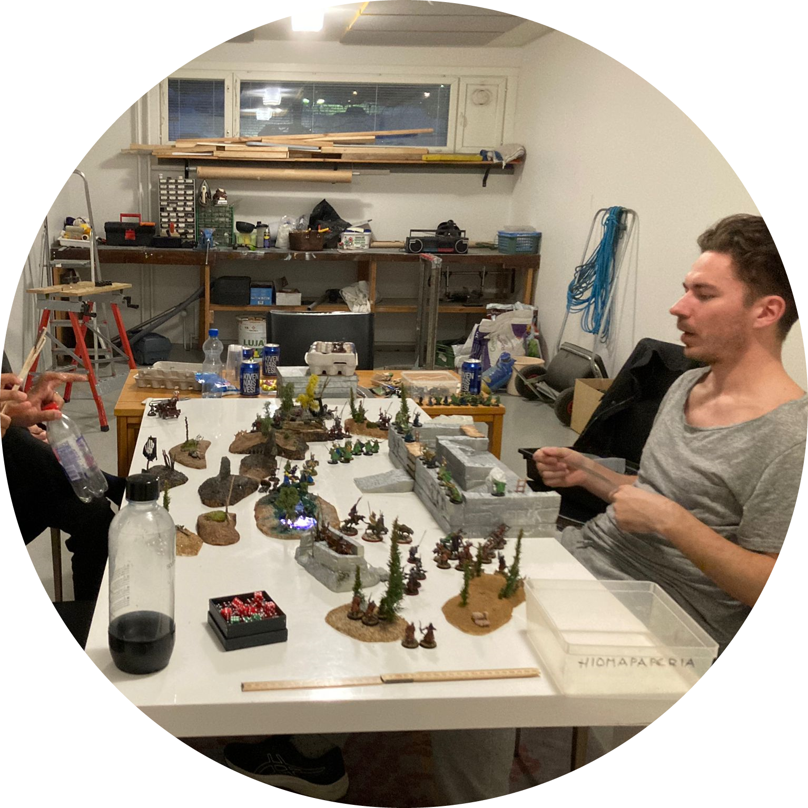
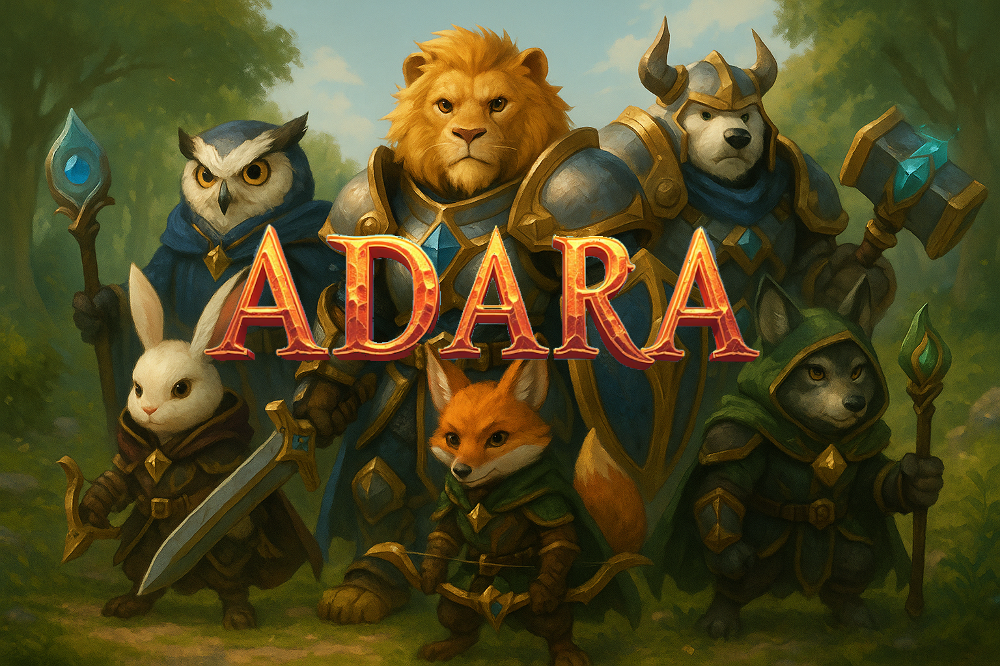
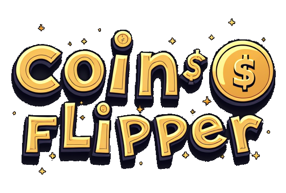
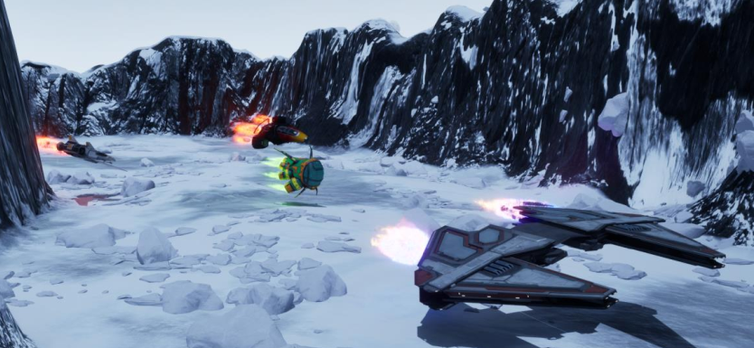
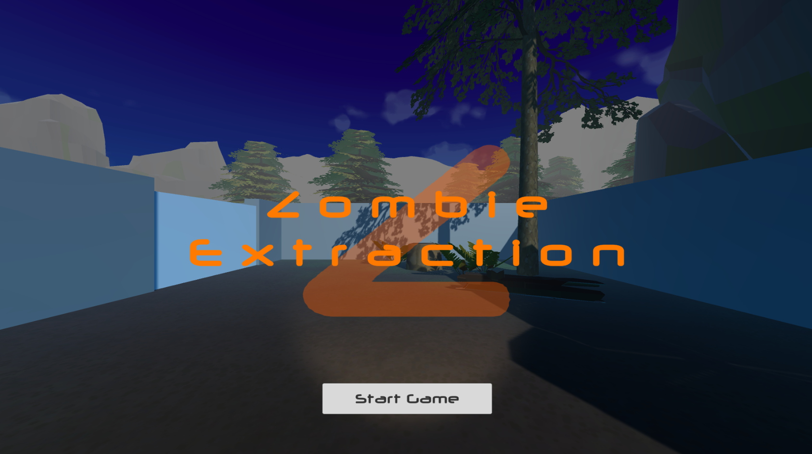
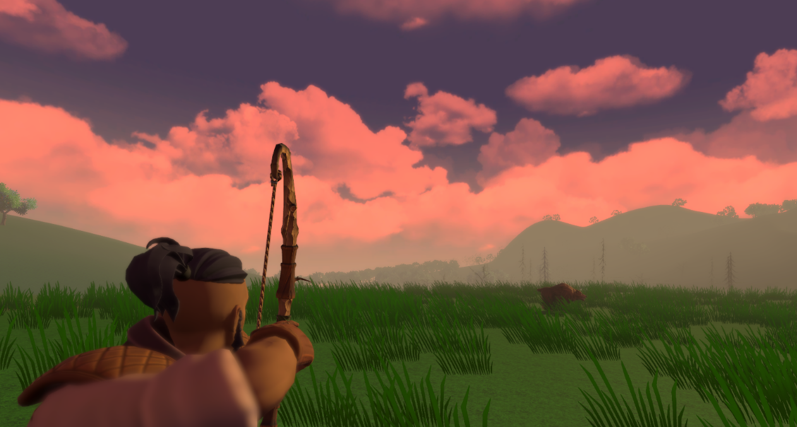
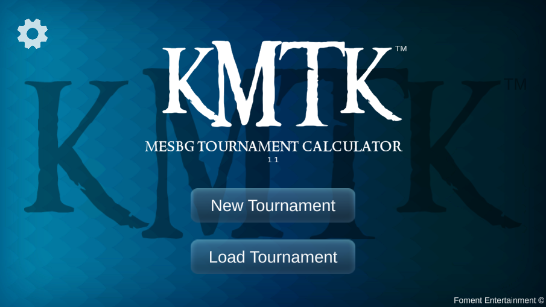
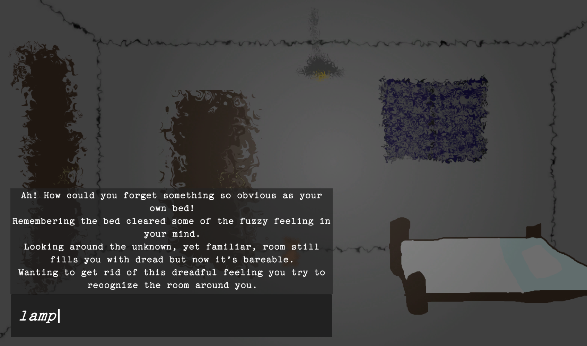
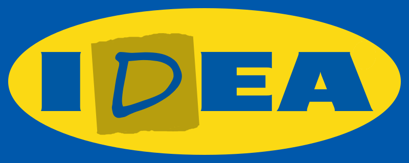

My Projects

World Cup 2026 Prediction Game
Status: Ongoing
With the 2026 FIFA World Cup around the corner, I decided to join forces with another football fanatic in this collaboration project. Our goal is to make a website that can be used as a pseudo-betting platform for friends to bet on upcoming games.
Adara

Status: Ongoing
Adara is a passion project focused on world-building with the goal of making a fluid Action Adventure / TPS RPG (or at least a playable demo). This is a collaborative project with all ip being used by permission of the owner.
Coin Flipper

Status: Finished /Spring 2025
This is a coin flipping mobile UI application in development for Foment Entertainment using .NET MAUI and implementing several different AI solutions including ChatGPT, Udio and FullJourney.ai.
BotRacers

Status: Finished /Autumn 2024
Another game design project from a course on cutting-edge technologies in the field of game development - 4K HD graphics, Spatial Audio and the use of an Arcade Stick controller using Unreal Engine 5.4. I was responsible for sourcing and implementing assets and acted as the unofficial Marketing Manager.
Zombie Extraction

Status: Ongoing
This adventure-survival escape game is a project that I made as part of a Level Design course at the end of my second year of studies and implements Unity's Player Input manager. It is an ongoing project that I intend to publish at some point.
Oromë the Hunter

Status: Finished /Autumn 2023
This was a frontend level design project intended to widen my grasp of the Unity game engine. New skills acquired during this course were anything related to frontend including the terrain tool, lights, animators, animations, particle effects, sounds, virtual cameras and much more.
KMTK - Tournament Calculator

Status: Shelved
This is an application project in progress. Its purpose is to serve as a tool for organizing swiss-ranking system tournaments especially for one of my favorite hobbies, that is Middle-Earth Strategy Battle Game.
Cubic Wars

Status: Finished /Spring 2023
Cubic Wars is an ongoing project that I started in my first year of Game Technologies studies. Our team of five set off to make a space-themed top-down shooter.
WAKE - A Déjà Vu experience

Status: Finished /Autumn 2022
This was another game jam project I worked on at school. The concept was great, the execution was compromised by inexperience and lack of skill on my part, but I had a great time nonetheless.
IDEA - Furniture Simulator

Status: Finished /Autumn 2022
This was my first game ever in collaboration with three other students from XAMK. We made this game over a 48-hour game jam over the weekend.